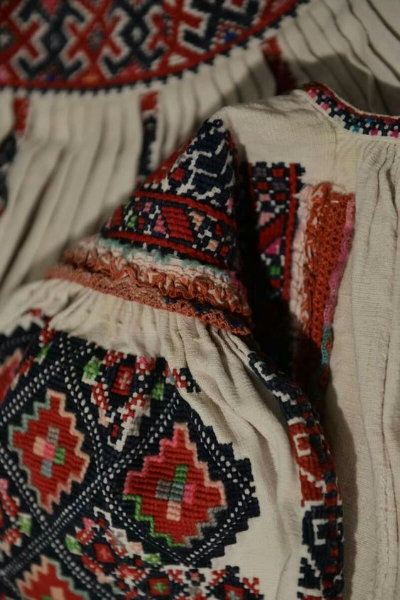
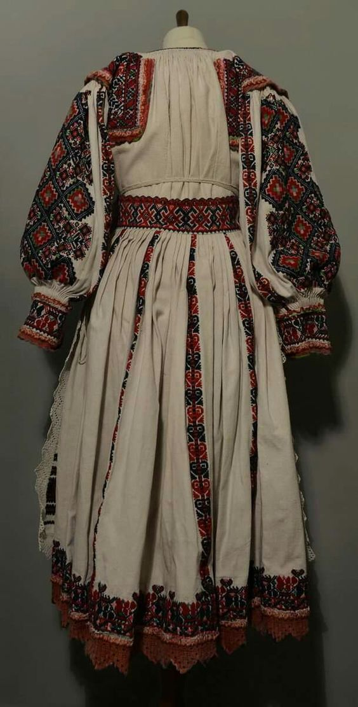
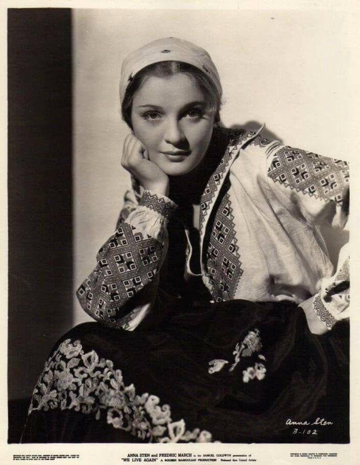
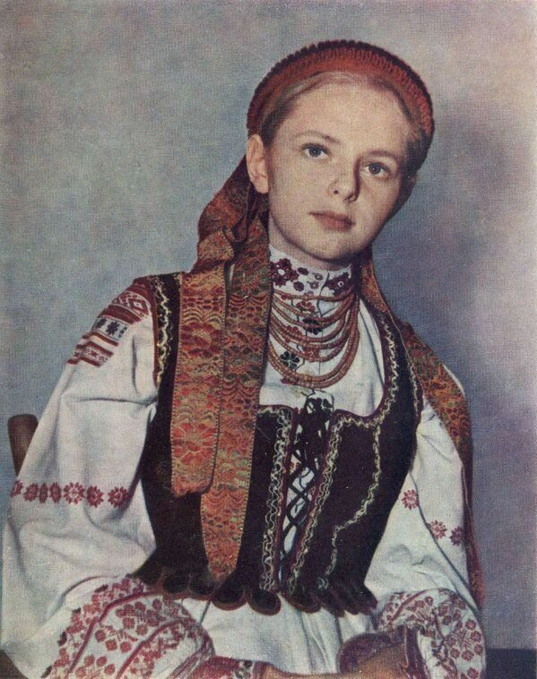

Вишиванка — це символ здоров'я та краси, щасливої долі й родової пам'яті, порядності й чесності, любові та святковості; крім того, вишиванка – це ще й оберіг. Символіка вишивки залежала від того, кому призначалося вбрання: парубкові-нареченому, чоловікові чи хлопцеві; дівчині чи заміжній жінці.
Виготовлялися сорочки з лляного чи конопляного полотна домашньої роботи. Було чимало типів традиційних сорочок залежно від форми, використаних матеріалів, а також від семантики кольорів: подільський, галицький, поліський, волинський, наддніпрянський, полтавський, гуцульський, буковинський, лемківський тощо. Цікаво, що символіка вишиванок часто-густо збігається з символікою орнаментів предметів матеріальної трипільської культури. Виявлені на Черкащині срібні бляшки з фігурками чоловіків (датують їх VI ст.) ідентифікуються з візерунками вишиванок XVIII—XX ст. Щоправда, символіка вишивки часто складалася з двох частин: історичної (родової) і прогнозуючої (загадування майбутнього, продовження роду).
 Історія вишивки: з глибини століть
Історія народної вишивки в Україні йде коренями в сиву глибину століть. Дані археологічних розкопок і свідчення мандрівників і літописців підтверджують, що вишивання як вид мистецтва тут існує з незапам'ятних часів. Вишивкою, за свідченням Геродота, був прикрашений ще одяг скіфів. Знайдені на Черкащині срібні бляшки з фігурками чоловіків, датовані VІ ст., при дослідженні показали ідентичність не тільки з одягом, але і з вишивкою українського народного костюма XVІІІ-XІX ст. Арабський мандрівник X ст. у своїх розповідях про русів згадує, що вони мали вишитий одяг. На жаль, пам'ятки української вишивки збереглися тільки за останні кілька століть, але навіть цього досить, щоб з'ясувати, що елементи символіки орнаментів української вишивки збігаються з орнаментами, які прикрашали посуд давніх жителів території України періоду неоліту, трипільської культури.
Полтавські вишивки виконуються хрестиком, плутаним хрестиком, подвійним прутиком, зубчиками, мережкою, ланцюжком тощо. Візерунки виконуються окремими швами і поєднанням кількох швів. Вишивають переважно білими нитками, зрідка - червоними та сірими, візерунок обводять чорними або кольоровими смугами.
Вишивкам Київщини властивий рослинно-геометричний орнамент із стилізованими гронами винограду, цвітом хмелю, ромбами, квадратами. Основні кольори білий, коралово-червоний, трапляється жовтий і голубий. Виконується вишивка хрестиком, знизуванням, гладдю.
Для вишивок Закарпаття характерний мотив «кривуля» у різних техніках виконання. Переважає техніка «заволікання» і вишивання хрестиком, часто використовується вирізування та гаптування. Кольорова гама вишивок широка червоне поєднується з чорним, при цьому виділяється один з кольорів ; поширені як білі, так і багатокольорові орнаменти.
- Вишивка хрестиком є найпопулірнішим швом, який застосовують у найрізноманітніших виробах. Наприкінці 19 століття така вишивка поширилася по всій Україні. Елементи орнаменту, які виконувалися хрестиком, найчастіше мали рослинний чи геометричний характер.
- Сорочка (особливо ж чоловіча) - символ кохання й вірності. У давньому замовлянні сказано: «Якою білою є сорочка на тілі, таким щоб і чоловік до жінки був. У деяких народних піснях, як зауважив О.Потебня, образ не пояснюється, але його можна зрозуміти на основі символічних значень
- У другій половині XIX ст. в європейській фольклористиці широко обговорювали сюжет про графа, який потрапив у полон до невірних, і про його дружину. Біла сорочка, дана дружиною чоловікові, — символ вірності: поки сорочка біла, доти жінка вірна. Випрати сорочку в чумацьких піснях означає полюбити чумака, навіть якщо він одружений. Характерно, що не завжди чумак погоджується на любовні стосунки з випадковими особами жіночої статі (в піснях це переважно дівчата або молода шинкарка-здирниця), не дозволяє їм «прати сорочку», хоч вона й не біла, бо «сьома неділя». Таким чином, чумак зберігає вірність коханій дівчині, до якої має повернутися.